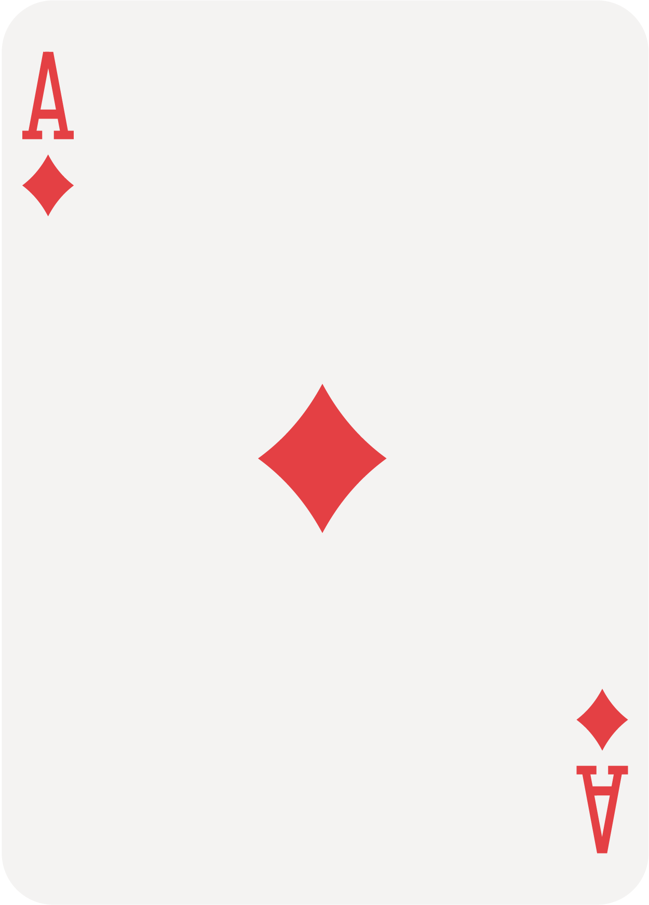
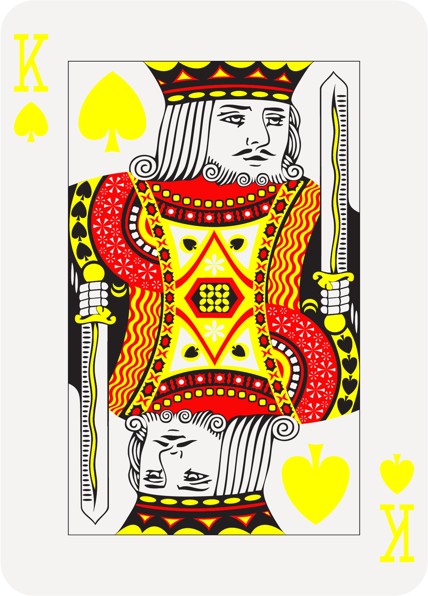
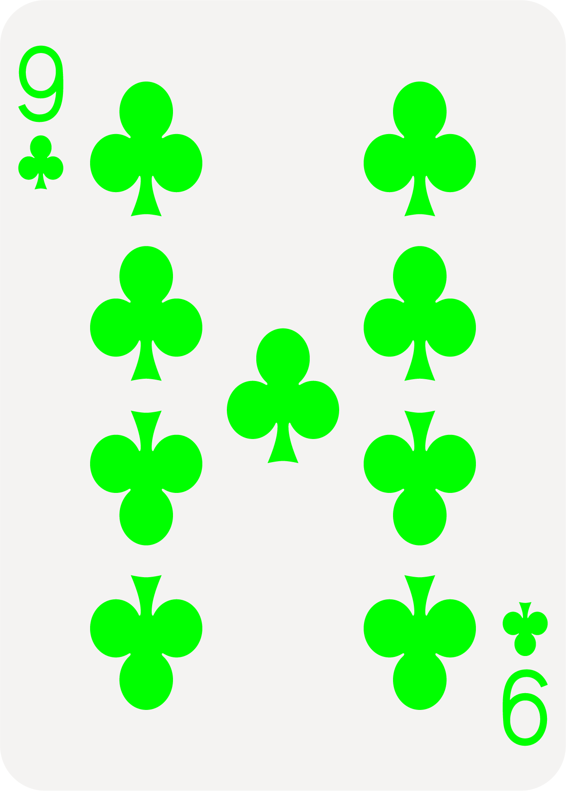
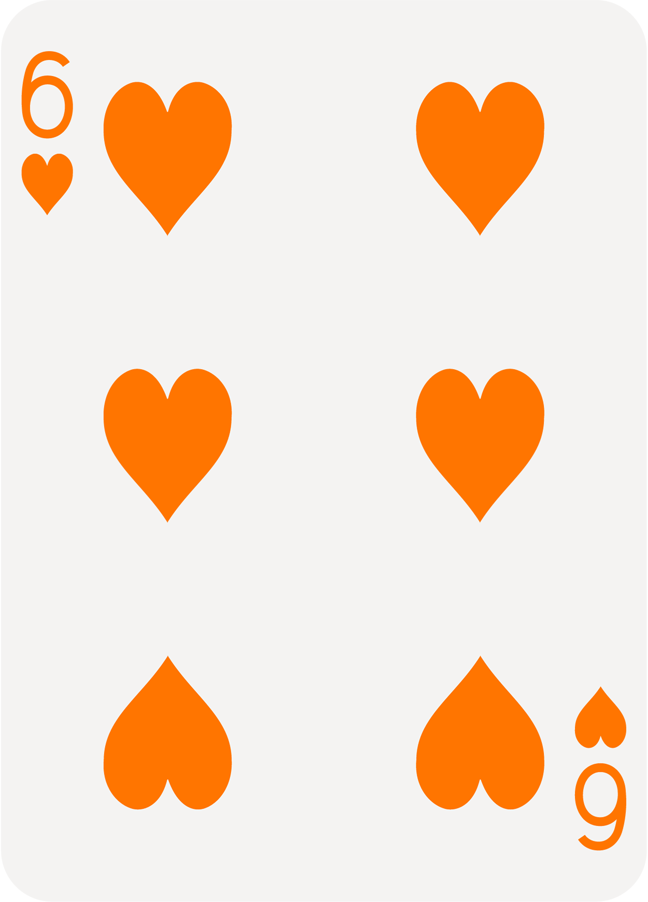

Scroll to keep site alive
Visit desktop to play
Move Mouse to Keep Site Alive
00 Seconds to Closing
Credits
Music by Dj Caesar. Monumental Neon typeface by Robin Mientjes. With text from Digital Gambling: The Coincidence of Desire and Design by Natasha Dow Schull and Slouching Towards Bethlehem: Four Meditations on the Old and New Spirits of Capitalism by David Weldzius. Developed by Anna Sagström for Interactive Design, Yale School of Art 2019.
"Moments are the elements of profit" – Karl Marx

Gambling appears to invert the nineteenth-century worker’s relationship to time, particularly its slow, monotonous passage, which was once principal to the worker’s estrangement from industrial production. In contrast to that outmoded principle, the gambler does not need to be managed or compelled to work more efficiently. She is at once an entrepreneur, a contractor, and a free agent. No need to punch in, the gambler is identified by facial recognition software embedded in state-of-the-art surveillance software, the sensors that read her MasterCard chip, or both. Her labor is not burdened by salary requirements, benefits, or any other contractual obligations. A ceaseless servant, she will never demand more than she is given. She will not organize, picket, or strike. The narratives that play through the gambler’s head as she is engaged in endless rounds of blackjack, poker, and baccarat are wholly incompatible with the tenets of dialectical materialism, even as, like the nineteenth-century worker, she is scarcely a beneficiary of her own labor. In truth, for this arrangement to endure, the gambler must convince herself that she has a standing chance (at last!) to partake in the surplus that she herself produces. There is nothing cruel or misguided about this arrangement because, after all, what other activities under the new system of labor and capital present an opportunity, albeit quantifiably narrow, to transcend one’s socioeconomic class?

Karl Marx wrote that a capitalist mode of production turns the "laborer into a fragment of a man, degrades him to the level of a machine." Digital capabilities take these fragmenting tendencies a step further: the machine player (who is, arguably, a contemporary proxy for the factory laborer) is not merely socially isolated and made into a fragment of a man but is removed from the palpable dimensions of his own body.

Walter Benjamin has argued that "the countless movements of switching, inserting, pressing" that punctuate modern life and its technologies (intimately connected as they are with the autonomization and standard timing of industrial labor) alter the structure of human experience. "Thus technology has subjected the human sensorium to a complex kind of training," he wrote of traffic signals. In modernity, "the shock experience has become the norm". Perhaps today we have moved from shock to the zone, a state of absorption characterized by flow and continuity. The zone exemplifies traits of "postmodernity" as a number of cultural critics have outlined them: The zone is characterized by play rather than purpose, chance rather than design, absence and immersion rather than presence and perspective, the collapse of time and space (or "time-space compression"), the "waning of affect," the free-floating circulation of credit in market exchange.

"It is a question of extracting, from time, ever more available moments and, from each moment, ever more useful forces."
– Michael Foucault
Gambling appears to invert the nineteenth-century worker’s relationship to time, particularly its slow, monotonous passage, which was once principal to the worker’s estrangement from industrial production. In contrast to that outmoded principle, the gambler does not need to be managed or compelled to work more efficiently. She is at once an entrepreneur, a contractor, and a free agent. No need to punch in, the gambler is identified by facial recognition software embedded in state-of-the-art surveillance software, the sensors that read her MasterCard chip, or both. Her labor is not burdened by salary requirements, benefits, or any other contractual obligations. A ceaseless servant, she will never demand more than she is given. She will not organize, picket, or strike. The narratives that play through the gambler’s head as she is engaged in endless rounds of blackjack, poker, and baccarat are wholly incompatible with the tenets of dialectical materialism, even as, like the nineteenth-century worker, she is scarcely a beneficiary of her own labor. In truth, for this arrangement to endure, the gambler must convince herself that she has a standing chance (at last!) to partake in the surplus that she herself produces. There is nothing cruel or misguided about this arrangement because, after all, what other activities under the new system of labor and capital present an opportunity, albeit quantifiably narrow, to transcend one’s socioeconomic class?
–Slouching Towards Bethlehem: Four Meditations on the Old and New Spirits of Capitalism by David Weldzius.
The acceleration or intensification of the digital game across bodily, temporal, and monetary registers maybe the logical extension of a modern technological ethos but at the same time marks a qualitative shift in social and existential experience. Strategies of modern discipline such as fragmentation, regimentation, and discontinuity are not abandoned; instead they are sped up to a point where they function on a register of interactivity, adaptability, choice, modulation, flow, and continuity; shock is absorbed. Levers, pulleys, clocks, and cameras are integrated with a computerized substrate of ever more complex configuration, promising players the perpetuum mobile of the zone and ensuring "continuous productivity.”
–Digital Gambling: The Coincidence of Desire and Design by Natasha Dow Schull